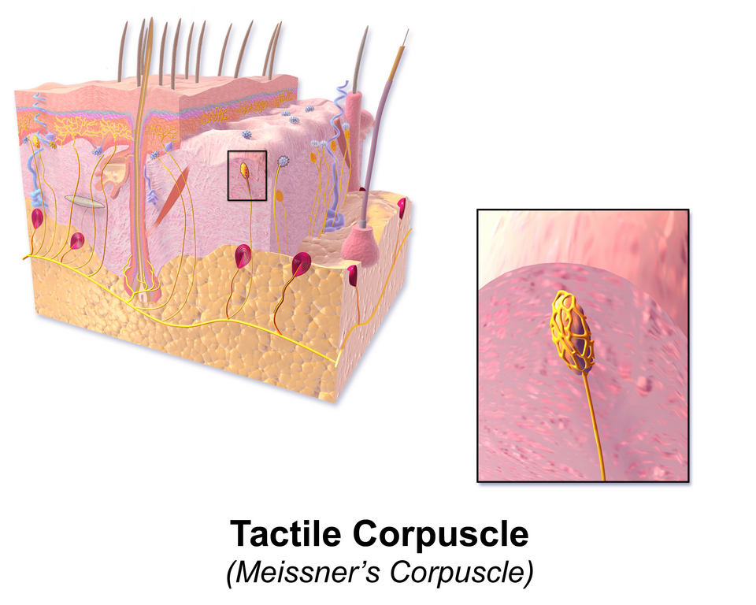
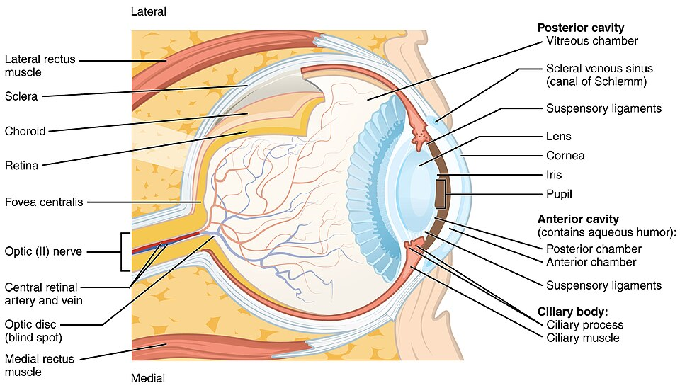
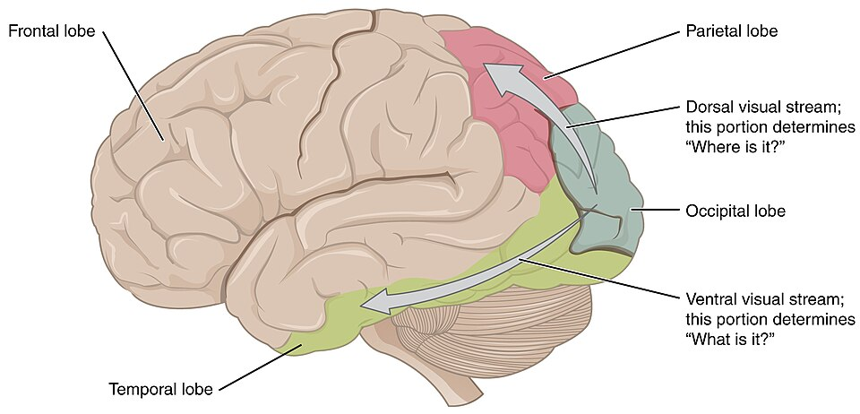
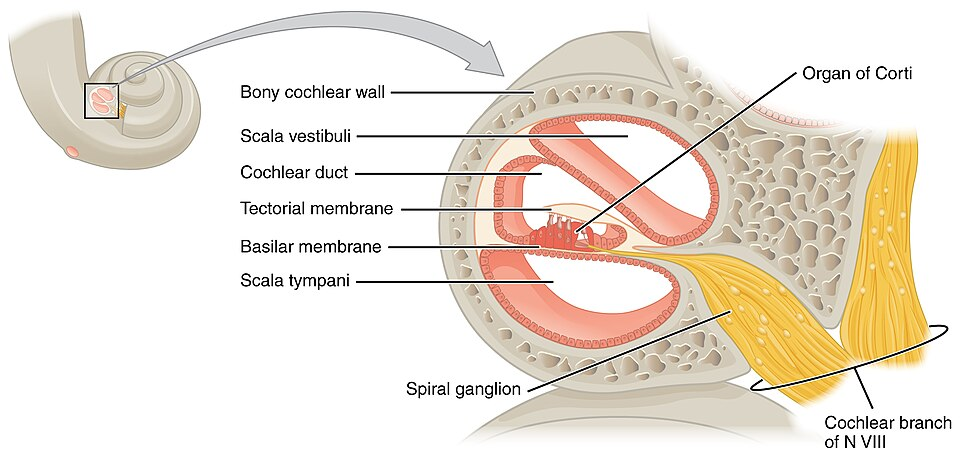
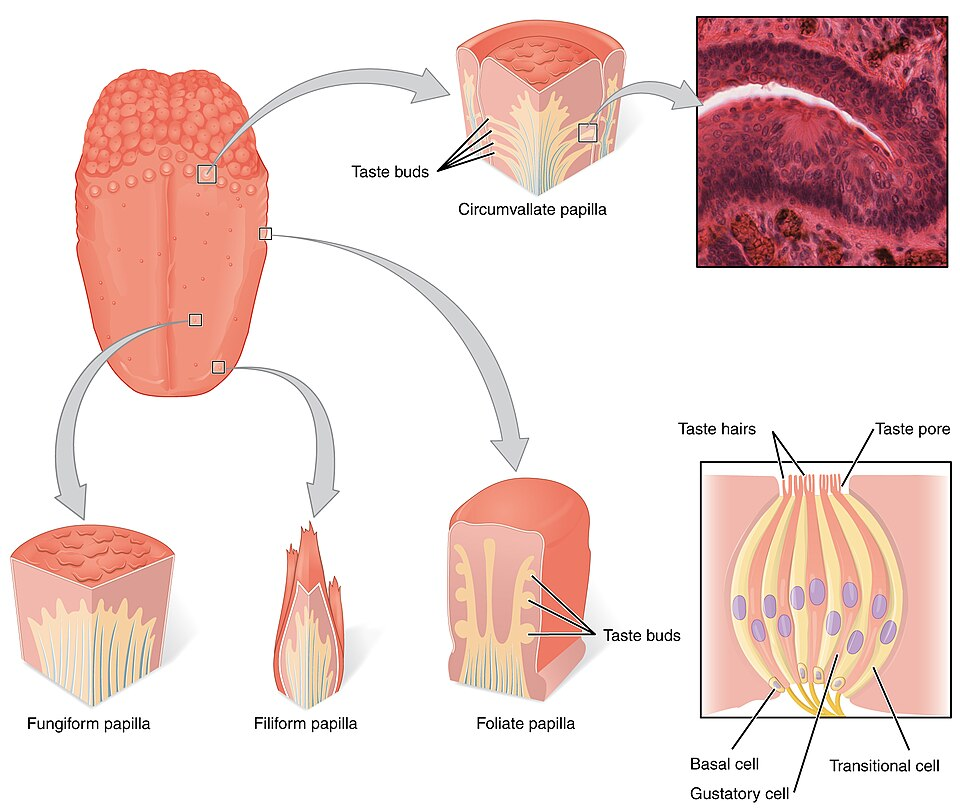
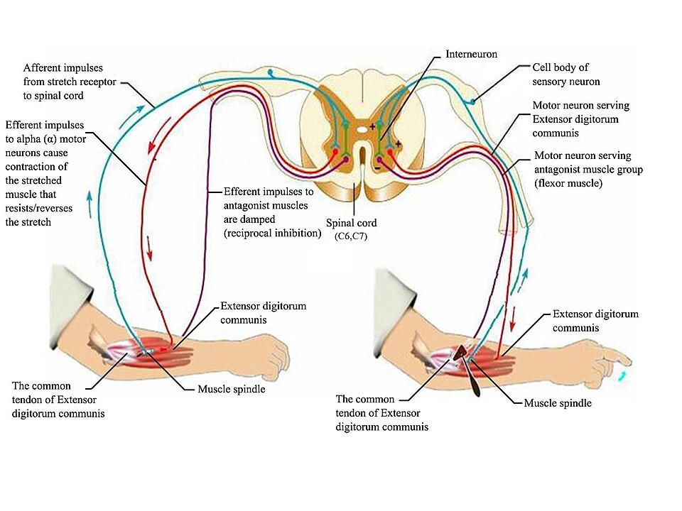

The Somatic Nervous System
The somatic nervous system is the part of you that deals with the outside world — it carries sensation in and sends voluntary commands to your skeletal muscles out. This chapter follows that two-way traffic from beginning to end. We start where every sensation is born: at the receptors in your skin, then move up through the great special senses — the eye and its visual pathway, the ear that hears and balances you, and the chemical senses of taste and smell. Finally we close the loop with the fastest circuit in the body, the reflex arc, where a signal comes in and a muscle answers before your brain has even been told. By the end you will be able to trace a stimulus from the world all the way to a response.
By the end of this chapter you can
- Distinguish general from special senses and classify sensory receptors by the stimulus they detect (mechano-, thermo-, noci-, chemo-, photoreceptors).
- Name the cutaneous receptors for light touch, deep pressure, temperature, and pain, and explain sensory adaptation.
- Identify the three tunics of the eye and trace the path of light to the retina, explaining refraction and accommodation.
- Follow the visual pathway from photoreceptor through the optic chiasm to the visual cortex, and predict the field defect from a given lesion.
- Describe the outer, middle, and inner ear and explain how the organ of Corti turns a sound wave into a nerve signal.
- Explain how taste and smell detect chemicals, and why smell is uniquely tied to memory and emotion.
- List the five parts of a reflex arc and contrast a monosynaptic stretch reflex with a polysynaptic withdrawal reflex.
Section 1How sensation begins: the receptors

Two families of senses
Every experience of the world begins with a sensory receptor — a specialized nerve ending that converts some form of energy into an electrical signal the nervous system can read. That conversion is called transduction, and it is the first step in all sensation. We sort the senses into two families. The general senses — touch, pressure, vibration, temperature, pain, and the body’s own position sense (proprioception) — are spread all over the body in the skin, muscles, joints, and organs. The special senses — vision, hearing, balance, taste, and smell — are concentrated in complex organs in the head, and they fill the rest of this chapter.
Receptors are named for what they detect
The simplest way to organize the dozens of receptor types is by the kind of stimulus each one responds to. Learn these five categories and you can place almost any receptor in the body:
| Receptor type | Responds to | Example |
|---|---|---|
| Mechanoreceptor | Physical deformation — touch, pressure, stretch, vibration, sound | Tactile corpuscles; hair cells of the ear |
| Thermoreceptor | Temperature and changes in it | Warm and cold free nerve endings in skin |
| Nociceptor | Tissue damage — the pain receptors | Free nerve endings that signal cuts, burns, inflammation |
| Chemoreceptor | Chemicals dissolved or airborne | Taste and smell receptors; blood O₂/CO₂ sensors |
| Photoreceptor | Light | Rods and cones of the retina |
The touch receptors of the skin
The skin alone holds a remarkable variety of endings, each tuned to a slightly different feeling. Free nerve endings are the simplest — bare fibers that report pain, temperature, and crude touch. Tactile (Merkel) discs sit just under the surface and read fine texture and edges. Tactile (Meissner’s) corpuscles — the egg-shaped structure in the reference figure — nestle in the dermal papillae of hairless skin such as the fingertips and lips, where they sense light touch and delicate, low-frequency vibration. Deeper down, the large, onion-layered lamellated (Pacinian) corpuscles answer to deep pressure and buzzing, high-frequency vibration, while bulbous (Ruffini) corpuscles register skin stretch and steady pressure.
Notice how density decides sensitivity. Your fingertips are crowded with receptors, each with a tiny receptive field, so you can feel two close points as separate — that is why you read Braille with a fingertip, not an elbow. Another key property is adaptation: many receptors are phasic (fast-adapting), firing hard when a stimulus starts or stops but going quiet if it holds steady. That is why you stop noticing the shirt on your back seconds after you put it on.
Find and identify each of the skin’s receptors in the interactive below.
- Transduction converts a stimulus into a nerve signal; general senses are body-wide, special senses live in head organs.
- Receptors are classed by stimulus: mechano-, thermo-, noci-, chemo-, and photoreceptors.
- Skin touch runs from free nerve endings and Merkel discs to Meissner’s (light touch), Pacinian (deep pressure/vibration), and Ruffini (stretch) corpuscles.
- Phasic receptors adapt to a steady stimulus; nociceptors (pain) barely adapt at all.
Section 2The eye: catching the light

Three layers wrapped around a ball of fluid
The eyeball is built from three concentric coats, or tunics. The tough outer fibrous tunic is the white sclera that gives the eye its shape, continuous in front with the clear, curved cornea — the eye’s main window and its strongest light-bender. Beneath it, the vascular tunic carries the blood supply: the dark choroid nourishes the retina and soaks up stray light, the ciliary body makes fluid and adjusts the lens, and the colored iris opens and closes the pupil to control how much light gets in. Innermost is the neural tunic, the retina, where light finally becomes a nerve signal.
| Tunic | Structures | Job |
|---|---|---|
| Fibrous (outer) | Sclera; cornea | Protects and shapes the eye; the cornea does most of the focusing |
| Vascular (middle) | Choroid; ciliary body; iris | Supplies blood, makes aqueous humor, controls the lens and pupil |
| Neural (inner) | Retina (rods, cones, and relay neurons) | Transduces light into action potentials |
The path of a light ray
Follow one ray from the world to the retina: it passes through the cornea → aqueous humor → pupil → lens → vitreous humor → retina. Two fluids fill the eye and keep it firm. The watery aqueous humor fills the anterior cavity in front of the lens, feeds the avascular cornea and lens, and constantly drains out through the scleral venous sinus (canal of Schlemm). Behind the lens, the jelly-like vitreous humor fills the large posterior cavity. Refraction — the bending of light — is done mostly by the cornea, with the lens making the fine adjustments.
Accommodation and the sharpest spot
To focus on something near, the eye performs accommodation: the ciliary muscle contracts, which slackens the suspensory ligaments and lets the elastic lens bulge into a rounder, more powerful shape. For distant objects the ciliary muscle relaxes, the ligaments pull tight, and the lens flattens. The image lands on the retina, where a small pit called the fovea centralis is packed almost entirely with cones and gives the sharpest, most detailed color vision. Where the optic nerve leaves the eye there are no photoreceptors at all — the optic disc, your natural blind spot. The retina holds two receptor types: rods, which are exquisitely sensitive in dim light but see no color, and cones, which need bright light and give us color and detail.
Explore every structure of the eyeball in the cross-section below.
- Three tunics: fibrous (sclera + cornea), vascular (choroid, ciliary body, iris), and neural (retina).
- Light travels cornea → aqueous humor → pupil → lens → vitreous → retina; the cornea refracts most, the lens fine-tunes.
- Accommodation: ciliary muscle contracts → lens rounds up for near vision.
- The fovea (all cones) gives sharpest vision; the optic disc is the blind spot; rods serve dim light, cones serve color.
Section 3The visual pathway: from retina to cortex

The route to the back of the brain
Once the retina has made a signal, it must reach the part of the brain that can interpret it — the visual cortex in the occipital lobe, at the very back of the head. The journey runs: retinal ganglion cell axons → optic nerve (CN II) → optic chiasm → optic tract → lateral geniculate nucleus of the thalamus → optic radiations → primary visual cortex. The single most important stop is the optic chiasm, the X-shaped crossing just under the brain where the fibers from the nasal (inner) half of each retina cross to the opposite side while the temporal (outer) fibers stay put.
Why each brain half sees the opposite world
That partial crossover has a clean consequence: the left half of your visual field is processed by the right hemisphere, and the right half by the left hemisphere. It sounds backwards until you remember the lens flips every image, so the left half of the world lands on the nasal retina of the left eye and the temporal retina of the right eye — and both of those fiber groups converge on the right brain. This crossing is not a quirk — it is what lets the brain fuse the two eyes’ slightly different views into one three-dimensional picture. From the cortex the signal splits again into a dorsal “where/how” stream toward the parietal lobe and a ventral “what” stream toward the temporal lobe, exactly as the reference figure shows.
Lesions map to the pathway
Because the anatomy is so orderly, damage at each point produces a predictable loss of vision — a favorite of every neurology exam:
| Lesion site | Visual field result |
|---|---|
| Optic nerve (one side) | Total blindness in that one eye |
| Optic chiasm (center) | Loss of both outer (temporal) fields — bitemporal hemianopia |
| Optic tract or beyond (one side) | Loss of the opposite half-field in both eyes — homonymous hemianopia |
Step through the whole journey, from photoreceptor to cortex, in the interactive.
- Pathway: retina → optic nerve → optic chiasm → optic tract → thalamus (LGN) → visual cortex in the occipital lobe.
- At the chiasm, nasal fibers cross so each hemisphere handles the opposite half of the visual field.
- Cortex feeds a dorsal “where” stream (parietal) and a ventral “what” stream (temporal).
- Lesion location predicts the defect — chiasm damage gives bitemporal hemianopia.
Section 4The ear: hearing and balance

Three parts passing a wave inward
The ear does two jobs at once — it hears, and it keeps you balanced — and it is built in three parts. The outer ear (the auricle and the external acoustic meatus) funnels sound to the tympanic membrane, or eardrum, and makes it vibrate. The air-filled middle ear holds the three smallest bones in the body, the ossicles — malleus, incus, and stapes — which lever the vibration across and press it onto the oval window; the auditory (Eustachian) tube connects here to the throat to equalize pressure. The fluid-filled inner ear, buried in the temporal bone, contains the spiral cochlea for hearing plus the vestibule and semicircular canals for balance.
| Region | Key structures | Job |
|---|---|---|
| Outer ear | Auricle, ear canal, tympanic membrane | Collects sound and vibrates the eardrum |
| Middle ear | Malleus, incus, stapes; auditory tube | Amplifies and transmits vibration to the oval window |
| Inner ear | Cochlea; vestibule & semicircular canals | Turns vibration into hearing; senses head position and motion |
How the cochlea turns motion into sound
Inside the coiled cochlea sit three fluid channels. When the stapes rocks the oval window, it sends a pressure wave through the perilymph, and that wave sets the basilar membrane shivering. Riding on the basilar membrane is the organ of Corti (the spiral organ), studded with hair cells whose tiny stereocilia brush against the overhanging tectorial membrane. When the cilia bend, ion channels pop open, the hair cell depolarizes, and it fires the cochlear nerve (part of cranial nerve VIII). The round window bulges to relieve the pressure so the wave can flow.
Pitch is coded by place. The basilar membrane is narrow and stiff at the base of the cochlea, where it responds to high-frequency sounds, and wide and floppy at the apex, where it responds to low-frequency sounds. So which hair cells fire tells the brain what note it is hearing — a beautiful example of anatomy doing computation. Meanwhile the neighboring vestibule senses gravity and straight-line acceleration and the semicircular canals sense rotation, giving you your sense of balance through the same eighth nerve.
Send a sound wave inward through all three parts of the ear in the interactive.
- Three parts: outer (collects sound), middle (ossicles amplify), inner (cochlea + balance organs).
- The organ of Corti on the basilar membrane holds hair cells that transduce vibration into the cochlear nerve (CN VIII) signal.
- Pitch is mapped by place on the basilar membrane — base for high tones, apex for low.
- The vestibule and semicircular canals provide balance; hair-cell (sensorineural) loss is permanent.
Section 5Taste and smell: the chemical senses

Tasting the dissolved, smelling the airborne
Taste and smell are both chemoreceptors — they detect molecules rather than energy. The difference is only the medium: taste (gustation) reads chemicals dissolved in your saliva, while smell (olfaction) reads chemicals floating in the air. Taste happens in taste buds, which sit mostly on the bumps of the tongue called papillae — the mushroom-shaped fungiform, the ridged foliate, and the large circumvallate papillae at the back. (The pointed filiform papillae have no taste buds; they only grip food and sense texture.) Each bud is a cluster of gustatory cells whose taste hairs poke up through a taste pore to sample the fluid, backed by basal cells that are constantly replacing worn-out taste cells every week or two.
| Basic taste | Signals | Trigger |
|---|---|---|
| Sweet | Sugars, energy | Glucose and other carbohydrates |
| Sour | Acids, unripe or spoiled food | Hydrogen ions (H⁺) |
| Salty | Minerals, electrolytes | Sodium ions (Na⁺) |
| Bitter | Potential toxins | Alkaloids and many poisons |
| Umami | Protein, savoriness | Glutamate (as in broth or aged cheese) |
Smell: a neuron with its feet in the air
High in the roof of the nasal cavity sits the olfactory epithelium, whose receptor cells are true neurons with cilia bathed in mucus. With only about 400 receptor types the nose still distinguishes thousands of odors, because each smell activates its own combination of receptors — a chemical fingerprint the brain learns to read. The axons of these neurons thread up through the tiny holes of the cribriform plate of the ethmoid bone to reach the olfactory bulb. Here is what makes smell strange and special: unlike every other sense, smell signals go straight to the olfactory and limbic areas of the brain without first stopping in the thalamus. And unusually for the nervous system, olfactory neurons regenerate throughout life.
Switch between the two chemical senses and explore their receptors in the interactive.
- Both are chemoreceptors: taste reads dissolved molecules, smell reads airborne ones.
- Taste buds on the papillae hold gustatory cells that detect five basic tastes — sweet, sour, salty, bitter, umami.
- Olfactory neurons reach the brain through the cribriform plate and are among the few neurons that regenerate.
- Smell alone skips the thalamus and wires straight to the limbic system, tying it to memory and emotion.
Section 6The reflex arc: sensation answered

The fastest circuit in the body
We began this chapter with sensation coming in; we end it with a response going out. A reflex is a rapid, automatic, and predictable reaction to a stimulus — and its defining feature is that it does not wait for conscious thought. The signal runs a short hardwired loop called the reflex arc, often turning around in the spinal cord and firing a muscle before your brain has even registered what happened. That speed is protective: you jerk your hand off a hot stove long before you feel the burn.
The five parts of every reflex arc
No matter how simple or complex, every reflex arc is built from the same five components in the same order. Learn them once and you can diagram any reflex in the body:
| Step | Component | What it does |
|---|---|---|
| 1 | Receptor | Detects the stimulus (e.g., a muscle spindle senses stretch) |
| 2 | Sensory (afferent) neuron | Carries the signal into the CNS |
| 3 | Integration center | One or more synapses in the spinal cord or brainstem |
| 4 | Motor (efferent) neuron | Carries the command back out |
| 5 | Effector | The muscle or gland that responds |
Knee-jerk simple, withdrawal complex
The classic stretch (patellar) reflex — the knee-jerk the doctor taps — is the simplest kind, a monosynaptic arc with just one synapse between the sensory and motor neurons. Tapping the tendon stretches the muscle; the muscle spindle fires; the sensory neuron synapses directly onto a motor neuron in the cord; and the quadriceps contracts, kicking the leg out. At the same instant, an interneuron inhibits the opposing hamstring muscle so it relaxes out of the way — a trick called reciprocal inhibition, visible in the reference figure. Other reflexes are polysynaptic, threading through interneurons: the withdrawal reflex that yanks your foot off a tack, paired with a crossed-extensor reflex that stiffens the other leg so you do not fall.
Trigger the knee-jerk and follow the signal through all five parts of the arc.
- A reflex is a fast, involuntary response that turns around in the cord or brainstem, not the conscious brain.
- Every arc has five parts: receptor → sensory neuron → integration center → motor neuron → effector.
- The stretch reflex is monosynaptic; withdrawal reflexes are polysynaptic and add interneurons.
- Reciprocal inhibition relaxes the antagonist; testing reflexes checks the whole arc and helps localize a lesion.
The chapter in one breath
- The somatic nervous system carries sensation in and voluntary commands to skeletal muscle out; all sensation begins when a receptor transduces a stimulus into a nerve signal.
- Receptors are classed by stimulus (mechano-, thermo-, noci-, chemo-, photoreceptor); the skin’s touch endings run from free nerve endings to Meissner’s, Pacinian, and Ruffini corpuscles, and most adapt while pain does not.
- The eye’s three tunics focus light through the cornea and lens onto the retina; accommodation rounds the lens for near vision, and rods serve dim light while cones and the fovea serve color and detail.
- The visual pathway crosses at the optic chiasm so each hemisphere sees the opposite field; lesion location predicts the field defect (chiasm → bitemporal hemianopia).
- The ear’s outer, middle, and inner regions pass a wave to the organ of Corti, where hair cells fire the cochlear nerve; the vestibule and semicircular canals handle balance.
- Taste and smell are chemical senses; taste buds detect five basic tastes, and smell wires directly to the limbic system, bypassing the thalamus.
- A reflex arc answers a stimulus in five steps (receptor → sensory neuron → integration center → motor neuron → effector); the stretch reflex is the monosynaptic model, and reflex testing localizes lesions.
ReferenceWords worth knowing
A quick reference for the terms in this chapter — skim it now, or circle back whenever a word trips you up.
- Accommodation
- The eye’s adjustment for near vision, in which the ciliary muscle contracts and the lens rounds up to bend light more strongly.
- Adaptation (sensory)
- The decline in a receptor’s firing when a stimulus is held steady; phasic (fast-adapting) receptors adapt quickly, tonic ones barely at all.
- Basilar membrane
- The membrane in the cochlea that supports the organ of Corti and vibrates in different places for different sound frequencies.
- Chemoreceptor
- A receptor that detects chemicals, such as the taste and smell receptors or the body’s blood-gas sensors.
- Cochlea
- The coiled, fluid-filled organ of the inner ear that transduces sound waves into nerve signals.
- Cone
- A retinal photoreceptor that operates in bright light and provides color and sharp detail; concentrated at the fovea.
- Fovea centralis
- A tiny pit in the retina packed with cones that produces the sharpest, most detailed vision.
- General senses
- The body-wide senses — touch, pressure, vibration, temperature, pain, and proprioception — served by receptors in skin, muscle, and organs.
- Gustation
- The sense of taste, produced by chemoreceptors in the taste buds detecting dissolved molecules.
- Mechanoreceptor
- A receptor that responds to physical deformation such as touch, pressure, stretch, vibration, or sound.
- Nociceptor
- A pain receptor (a free nerve ending) that signals actual or potential tissue damage and adapts very little.
- Olfaction
- The sense of smell, produced by regenerating receptor neurons in the nasal roof that detect airborne molecules.
- Optic chiasm
- The X-shaped crossing beneath the brain where the nasal retinal fibers cross to the opposite side, sending each visual field to the opposite hemisphere.
- Organ of Corti
- The spiral organ resting on the basilar membrane whose hair cells transduce vibration into the cochlear nerve signal.
- Photoreceptor
- A light-detecting receptor of the retina; the rods and cones.
- Reflex arc
- The five-part neural pathway (receptor, sensory neuron, integration center, motor neuron, effector) that carries out an automatic reflex.
- Refraction
- The bending of light as it passes through the cornea and lens so that it focuses on the retina.
- Retina
- The eye’s inner neural tunic, containing the photoreceptors and the relay neurons that begin the visual pathway.
- Rod
- A retinal photoreceptor that is highly sensitive in dim light but detects no color; most numerous in the periphery.
- Special senses
- The senses housed in complex organs of the head: vision, hearing, balance, taste, and smell.
- Stretch (patellar) reflex
- The monosynaptic knee-jerk reflex in which stretching a muscle triggers its own contraction with a single synapse.
- Taste bud
- A cluster of gustatory receptor cells, mostly on the tongue’s papillae, that detects the five basic tastes through a taste pore.